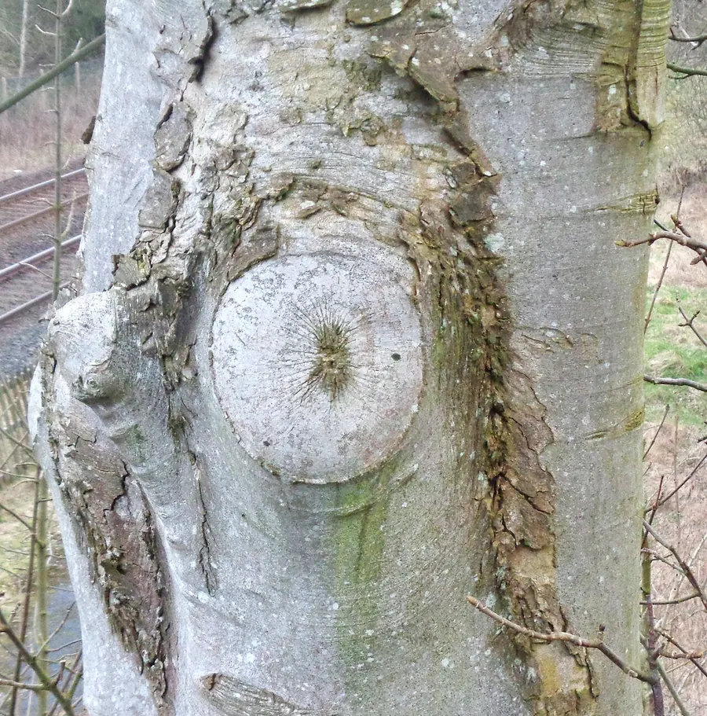
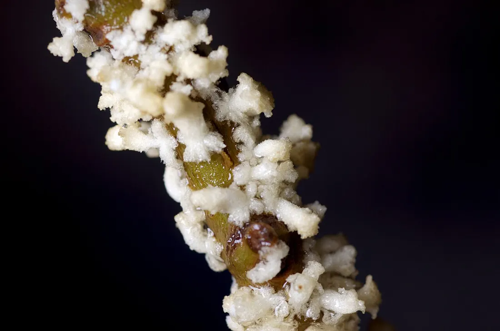
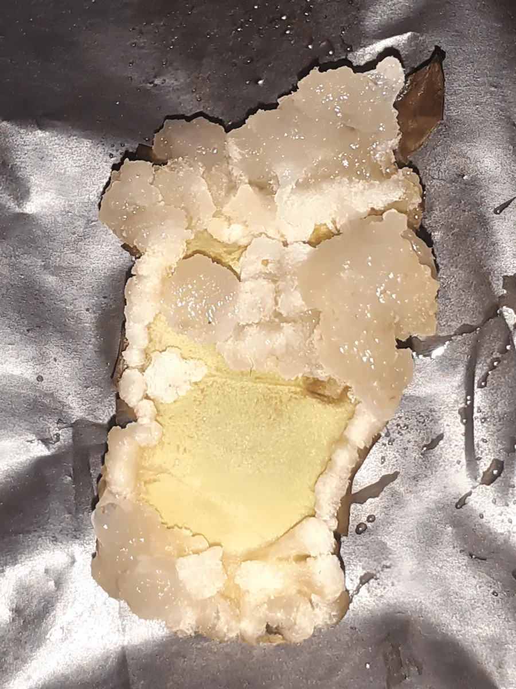
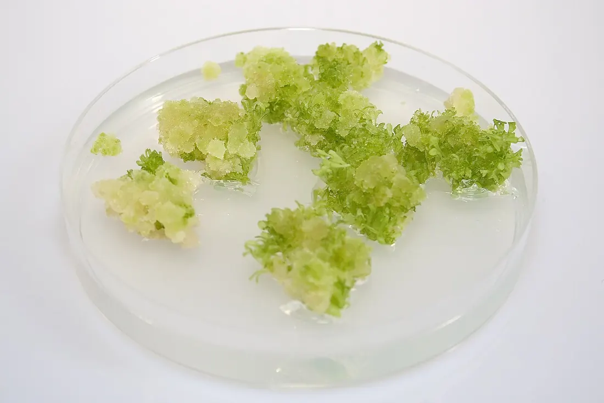
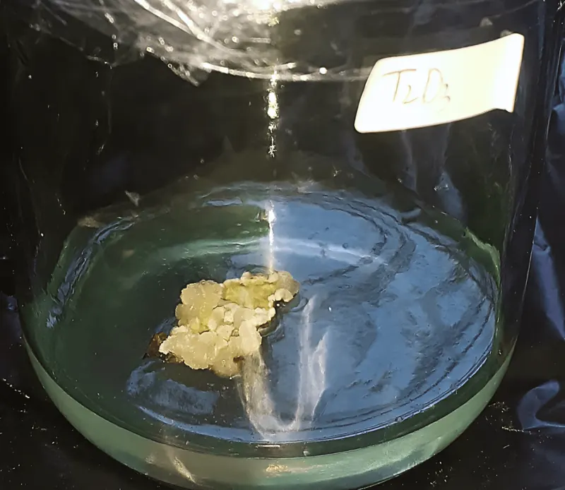

01Мета і план
Мета
Отримати калюсну тканину з різних експлантатів (сім’ядолей сої, стебла й листків тютюну, незрілих зародків і вузлів кущення пшениці, корінців квасолі), підтримати її пасажем і з’ясувати, як склад фітогормонів у середовищі визначає частоту утворення, ріст і тип калюсу.
Знадобиться
- ламінар-бокс (шафа зі стерильним потоком повітря), термостат на +25 °C;
- пеніцилінові флакони, пробірки й чашки Петрі з агаризованими середовищами Міллера або Мурасіге — Скуга (МС);
- стерильні пінцети, ланцети, препарувальні голки, спиртівка;
- «Білизна», хлорамін, 70 % і 96 % етанол, стерильна дистильована вода.
Ви дізнаєтеся
- що таке дедиференціація і чому без ауксину й цитокініну калюсу немає;
- чому співвідношення ауксин : цитокінін ≈ 10 : 1 оптимальне для калюсогенезу;
- як розрізняють пухкий, середньої щільності й щільний калюс;
- коли і як пасирувати калюс, щоб він не загинув.
02Теоретичні відомості
Калюс і дедиференціація
Калюс (від лат. callus — мозоль) — неорганізована тканина, що безладно розростається (проліферує) і складається з дедиференційованих клітин. Він утворюється і на рослині в місці поранення, і на експлантаті — фрагменті органа чи тканини, перенесеному на живильне середовище in vitro (у пробірці, поза організмом). Калюсну культуру вирощують на щільній (агаризованій) поверхні середовища — це поверхневе культивування; у рідкому середовищі на качалках отримують суспензійну культуру (глибинне культивування, тема 5).
Кожна клітина проходить три фази росту: поділ, розтягнення і диференціювання (спеціалізацію — наприклад, перетворення на клітину мезофілу з хлоропластами чи на судину). Після диференціювання клітина потовщує вторинну оболонку й утрачає здатність ділитися. Щоб вона знову почала ділитися, має відбутися дедиференціація — повернення в меристематичний (твірний, здатний до поділу) стан. При цьому в клітині зникають хлоро- і хромопласти, збільшуються ядро, кількість рибосом, мембран ендоплазматичного ретикулуму та апарату Гольджі; трапляються багатоядерні клітини (с. 68). Клітини калюсу мають велике ядро й багато РНК і ДНК, деякі накопичують крохмаль і вторинні метаболіти (речовини, не потрібні для основного обміну: алкалоїди, феноли тощо). Детальніше про поділ і диференціювання клітин — у статті Конспекту «Регуляція росту».
Ще понад 50 років тому М. П. Кренке показав, що в інтактній (цілій, неушкодженій) рослині калюс виконує три функції: захисну (закриває рани), запасну (накопичує поживні й вторинні речовини) і регенераційну (з нього відновлюються втрачені корені й пагони).






Ауксини, цитокініни та їх співвідношення
Обов’язкова умова дедиференціації — наявність у середовищі фітогормонів (рослинних гормонів) двох груп. Ауксини викликають дедиференціацію: природна ІОК (індоліл-3-оцтова кислота) і синтетичні НОК (α-нафтилоцтова кислота) та 2,4-Д (2,4-дихлорфеноксиоцтова кислота). Цитокініни запускають проліферацію — поділ дедиференційованих клітин: кінетин (6-фурфуриламінопурин) і 6-БАП (6-бензиламінопурин). Найактивніший ауксин у культурі — 2,4-Д, бо її не руйнують ферменти рослини; ІОК швидко окиснюється ферментом ІОК-оксидазою та на світлі, тому діє слабше й коротше (ауксини, цитокініни в Конспекті).
Якщо шматочок стебла, листка чи кореня (без верхівки) покласти на безгормональне середовище, поділ клітин не відбувається і калюс не утворюється (с. 62). Для індукції калюсу ауксини й цитокініни вносять у співвідношенні приблизно 10 : 1. Коли переважає цитокінін, калюс схильний утворювати бруньки й пагони, коли переважає ауксин без цитокініну — корені; це органогенез, якому присвячено тему 4. Залежність частоти калюсоутворення від обох гормонів показує теплова карта в моделі.
Є винятки, пов’язані з ендогенним (власним) вмістом гормонів і компетентністю клітин — їхньою готовністю відповісти на сигнал: незрілі зародки пшениці утворюють калюс на середовищі лише з 2,4-Д, без цитокінінів, а сім’ядолі соняшнику — навпаки, лише з цитокінінами (с. 65). У дводольних рослин дедиференціація відбувається легше, ніж в однодольних, тому для злаків потрібні високі концентрації ауксинів — 2,4-Д і НОК до 10 мг/л (с. 64, 70).
Типи, колір і полярність калюсу
Калюс має вигляд аморфної маси тонкостінних паренхімних (основних, неспеціалізованих) клітин без певної анатомічної будови. За щільністю розрізняють три типи калюсу:
| Тип | Будова | Як отримати |
|---|---|---|
| Пухкий | сильно обводнені клітини, легко розпадається на дрібні агрегати | 2,4-Д замість ІОК, вища концентрація ауксину, ферменти в середовищі |
| Середньої щільності | добре виражені меристематичні осередки (групи клітин, що діляться) | помірні дози ауксину й цитокініну |
| Щільний | диференціюються елементи камбію й провідної системи | ІОК, більше цитокініну чи хлориду кальцію CaCl2 |
Один тип можна перетворити на інший: замінити один ауксин іншим (ІОК на 2,4-Д), змінити концентрацію ауксину або CaCl2, додати ферменти (для пухкого калюсу). Калюс in vitro зазвичай білий або жовтуватий, рідше світло-зелений (на світлі), дуже рідко інтенсивно зелений чи червонуватий — залежно від виду, експлантата й умов. Темно-коричневе забарвлення з’являється під час старіння: у клітинах накопичуються окиснені фенольні сполуки — хінони. Щоб цього уникнути, у середовище додають антиоксиданти (речовини, що гальмують окиснення: аскорбінову кислоту, полівінілпіролідон тощо). Порівняння калюсів тютюну на різних середовищах — на рисунку з посібника нижче.
Багатьом експлантатам властива фізіологічна полярність — відмінність між верхнім (апікальним) і нижнім (базальним) кінцем: калюс краще утворюється на боці, ближчому до апікальних меристем кореня; кінчики корінців легше утворюють калюс, лежачи горизонтально, а сегменти стебла — стоячи вертикально (с. 71). Розмір експлантата теж важливий: первинний експлантат зазвичай має 5–10 мм3 і масу 20–100 мг, а калюс виникає з первинної чи вторинної меристеми та прилеглої до неї паренхіми (с. 67).





Ріст і пасаж
Первинний калюс з’являється на експлантаті за 2–6 тижнів. Щоб він не постарів, не втратив здатності до поділу й не загинув, його через 4–6 тижнів пасирують — переносять на свіже середовище; далі пасаж (субкультивування) повторюють кожні 3–4 тижні. Під час пасажу відрізають бурі некротичні (відмерлі) ділянки й залишки старого агару, а калюс ділять на рівні шматочки — інокулюми. За регулярного пасажу калюс живе десятиліттями: відомі культури віком 60–70 років (с. 66).
Ріст калюсу описує S-подібна крива з п’ятьма фазами — латентною (лаг-фазою), експоненційною, лінійною, уповільнення росту і стаціонарною, — після яких настає деградація (с. 63–64). Пасирувати найкраще наприкінці лінійної фази чи на початку уповільнення: маса вже велика, а некрозу ще мало. Як рахувати приріст і будувати криву — у темі 3; загальні закономірності росту — у статті Конспекту про криву росту.
Особливі властивості калюсних клітин
Калюсні клітини зберігають багато ознак материнської рослини — морозостійкість, стійкість до засолення й інших стресів, здатність синтезувати вторинні метаболіти. Водночас у них з’являються нові властивості:
- Фізіологічна асинхронність — клітини одночасно перебувають у різних фазах (поділу, росту, старіння). Навіть штучно синхронізована популяція через 3–4 поділи знову стає асинхронною.
- Генетична гетерогенність — поруч із диплоїдними клітинами (з подвійним набором хромосом, як у рослини) є поліплоїдні (3, 4, 5 і більше наборів) та анеуплоїдні (на кілька хромосом більше чи менше), виникають хромосомні аберації й мутації. Мутагенну дію має 2,4-Д, а цитокініни сприяють поліплоїдизації. За постійних умов новий каріотип (набір хромосом) стабілізується після 5–6 пасажів. Ця мінливість — основа клітинної селекції (тема 6).
- Гормононезалежність — після тривалого культивування деякі тканини ростуть без гормонів, бо самі їх синтезують. Такі клітини називають «звиклими», а тканини — «хімічними пухлинами»; зміни в них переважно епігенетичні (стосуються активності генів, а не послідовності ДНК). Справжні рослинні пухлини викликають агробактерії: Agrobacterium tumefaciens — корончасті гали, A. rhizogenes — «бородаті» корені, A. rubi — стеблові гали; їхня Ті-плазміда переносить у клітину Т-ДНК з генами синтезу ауксинів і цитокінінів (тема 11).
Експлантати й середовища ЛР 8–12
| ЛР | Експлантат | Середовище, гормони | Умови |
|---|---|---|---|
| 8 | сегменти сім’ядолей сої (Glycine max (L.) Merr.) | Міллера: ІОК 2 мг/л + кінетин 0,5 мг/л, гліцин 2 мг/л, сахароза 20 г/л, агар 6 г/л | флакони, +25 °C, темрява |
| 9 | калюс соняшнику, ріпаку, пшениці, цукрових буряків | калюсогенне середовище (пасаж) | +25 °C, вологість 60 %, 3–4 тижні |
| 10 | стебло біля основи й листки тютюну (Nicotiana tabacum L.) | МС: а) 2,4-Д 1 мг/л + БАП 0,2 мг/л; б) ІОК 1 мг/л + БАП 0,2 мг/л | флакони, +25 °C, темрява, 2–4 тижні |
| 11 | незрілі зародки (12 доба після цвітіння) і вузли кущення пшениці (Triticum aestivum L.) | зародки — МС без гормонів; вузли — МС + 2,4-Д 4 мг/л, гідролізат казеїну 500 мг/л, мезоінозит 100 мг/л | пробірки, світлова кімната, +25 °C, 2 тижні |
| 12 | корінці квасолі (Phaseolus vulgaris L.) 2–3 мм | МС + 2,4-Д 2 мг/л + кінетин 0,2 мг/л (саме 10 : 1) | чашки Петрі, +25 °C, темрява |
Середовище Міллера і МС (Мурасіге — Скуга) — набори мінеральних солей, заліза у формі хелату (сполуки, що утримує залізо розчинним), вітамінів і сахарози, загущені агаром; рН 5,6–5,8 доводять до автоклавування. Про їх приготування — у темі 1.
Як влаштована модель
Посібник описує дію гормонів якісно, тому модель використовує наближення — рівняння Хілла (S-подібну залежність відповіді від концентрації). Ефективна активність ауксину a і цитокініну c — це концентрація, помножена на відносну активність препарату (2,4-Д = 1; НОК = 0,55; ІОК = 0,3, на світлі ще менше; 6-БАП = 1; кінетин = 0,6), плюс ендогенний вміст гормону в експлантаті. Частота калюсоутворення:
Перший множник — дедиференціація (ауксин), другий — проліферація (цитокінін), третій — пригнічення надлишком ауксину; Ka — поріг чутливості до ауксину (менший у тютюну, більший у злаків), Kc — до цитокініну, Ki — токсична доза (≈ 6 мг/л 2,4-Д для дводольних, ≈ 16 мг/л для злаків). У досліді частоту визначають як відсоток експлантатів, що утворили калюс: F = nкалюс/nзаг · 100 %. Масу калюсу в часі рахує модель S-кривої з теми 3 (її параметри — теж наближення).
Фрагмент органа чи тканини, перенесений на живильне середовище.
Втрата клітиною спеціалізації й повернення до поділу.
Розростання тканини за рахунок багаторазових поділів клітин.
Перенесення частини калюсу на свіже середовище.
Шматочок калюсу чи частина суспензії, яку переносять при пасажі.
Відмирання клітин; некротична тканина бура, її видаляють.
Здатність клітини відповісти на гормональний сигнал.
Калюс, що росте без гормонів, синтезуючи їх сам («хімічна пухлина»).
03Інтерактивна модель
Дві вкладки відповідають двом етапам роботи з калюсом. У першій оберіть лабораторну роботу (середовище з посібника) або власне поєднання гормонів, натисніть «Запустити» — і пройдіть 2–6 тижнів культивування в прискореному часі: у флаконах, пробірках чи чашці Петрі на експлантатах виростає калюс, а в полі зору мікроскопа видно, як клітини втрачають хлоропласти й починають ділитися. Теплова карта показує частоту калюсоутворення для всіх поєднань ауксину й цитокініну — торкніться її, щоб обрати точку. У другій вкладці калюс пасирують: спробуйте запізнитися з пасажем і подивіться, що станеться. Пояснення понять — у розділах про гормони, типи калюсу і пасаж.
Калюсогенез на експлантатах
Експлантат × ауксин × цитокінін × світло → частота, ріст і тип калюсу
Лабораторна робота (середовище з посібника)
Експлантат
Фітогормони
Умови
Маса експлантата з калюсом, мг (смуги — фази росту)
Частота калюсоутворення: ауксин × цитокінін
Як читати. Флакони, пробірки чи чашка — повторності досліду; число з калюсом / усього дає частоту калюсоутворення. Поле зору: диференційовані клітини мають велику вакуолю й хлоропласти, під час дедиференціації хлоропласти зникають, ядро збільшується, далі з’являються тонкі нові стінки — поділи. На тепловій карті лінії — співвідношення ауксин : цитокінін; золота лінія 10 : 1 — оптимум за посібником. Зелені бруньки на калюсі — початок органогенезу (утворення органів), білі нитки — корінці.
Пасаж калюсу на свіже середовище
Ламінар-бокс: флакон → чашка Петрі → видалення некрозу → поділ → нові флакони
Культура
Схема пасажів
Маса калюсу в лінії пасажів, мг
Приріст ΔW і кількість шматочків за пасаж
Як читати. Пилкоподібна крива — маса у флаконі: росте за S-кривою, а при пасажі падає до маси одного шматочка (інокулюму). Пунктир — жива тканина: коли вона спадає, а загальна маса ще висока, у флаконі накопичується бура некротична тканина. Індекс приросту ΔW = (Wt − W0)/W0 пояснено в темі 3. «Флаконів потенційно» — скільки флаконів можна отримати, якщо щоразу пересаджувати всі шматочки.
04Хід лабораторних робіт
Робота 8. Отримання і культивування калюсної тканини сої с. 66–67
Мета: отримати калюс сої для субкультивування і використання як тест-системи на цитокініни (тема 9).
- Взяти стерильні сім’ядолі сої, отримані в роботі 5 (тема 1).
- У ламінар-боксі в чашці Петрі розділити сім’ядолі стерильним ланцетом на однакові сегменти.
- Перенести сегменти в пеніцилінові флакони на калюсогенне середовище: макросолі за Міллером 100 мл, мікросолі 1 мл, Fe-хелат 5 мл, вітаміни за Уайтом 1 мл, гліцин 2 мг/л, кінетин 0,5 мг/л, ІОК 2 мг/л, сахароза 20 г, агар 6 г; рН 5,6–5,8 до автоклавування.
- Культивувати в термостаті при +25 °C в абсолютній темряві.
- Отримані калюси замалювати й описати (колір, щільність, розмір).
У моделі — пресет «ЛР 8 · соя».
Робота 9. Перенесення (пасаж) калюсної тканини на свіже живильне середовище с. 67–68
Матеріал: калюс соняшнику, ріпаку, пшениці, цукрових буряків; флакони зі стерильним середовищем, пінцети, скальпелі, чашки Петрі.
- Перенести первинний калюс із пеніцилінового флакона в стерильну чашку Петрі.
- Ланцетом відокремити старі некротизовані ділянки та шматочки агару.
- Поділити калюс на рівні шматочки (експлантати).
- Перенести шматочки у флакони зі свіжим калюсогенним середовищем, злегка вдавлюючи їх пінцетом в агар.
- Культивувати в термостаті при +25 °C і вологості повітря 60 % протягом 3–4 тижнів.
- Визначити ростові характеристики (тема 3) і записати в лабораторний журнал.
У моделі — вкладка «ЛР 9. Пасаж».
Робота 10. Отримання калюсної тканини з листків тютюну с. 68–70
Тютюн легко дедиференціюється й утворює швидкоростучий калюс, тому це зручна модель для вивчення обміну речовин калюсних тканин. Калюс отримують на середовищі МС з ауксинами.
- Приготувати середовища МС з додаванням: а) 1,0 мг/л 2,4-Д + 0,2 мг/л БАП; б) 1,0 мг/л ІОК + 0,2 мг/л БАП.
- Листки тютюну стерилізувати 10 хв у розчині «Білизни» (1 : 3) і тричі по 5 хв промити стерильною дистильованою водою.
- Стерильним скальпелем вирізати сегменти стебла біля основи завдовжки 1,2–2 см і завширшки 1 см; для кращого калюсогенезу зробити насічки по всій довжині.
- Розкласти експлантати на середовища в пеніцилінових флаконах, перед кожним етапом обпалюючи інструменти в полум’ї спиртівки.
- Культивувати в термостаті при +25 °C в абсолютній темряві.
- Через 2–4 тижні замалювати й порівняти калюси на двох середовищах (рис. 6 посібника).
У моделі порівняйте пресети «ЛР 10а» і «ЛР 10б».
Робота 11. Отримання калюсів з незрілих зародків і вузлів кущення пшениці с. 70–71
Калюс пшениці використовують для вивчення солестійкості, стійкості до температурного стресу, отримання суспензій і протопластів. Особливість середовищ для злаків — високий вміст ауксинів (2,4-Д, НОК до 10 мг/л).
- Незрілі зернівки ізолювати на 12-ту добу від початку цвітіння (стадія молочної стиглості) і зберігати в холодильнику при +4 °C.
- Зернівки стерилізувати 10 хв у розчині «Білизни» (1 : 2) і тричі по 10 хв промити стерильною водою.
- У чашці Петрі препарувальною голкою вичленити зародки й покласти в пробірки на безгормональне середовище; культивувати у світловій кімнаті при +25 °C.
- Пробіркові рослини вийняти довгим пінцетом на стерильні паперові «матраци», нарізати скальпелем фрагменти по 5–10 мм, виділити міжвузля з ділянками листкової піхви й перенести на середовище: макросолі МС 100 мл, мікросолі 1 мл, Fe-хелат 5 мл, вітаміни МС 1 мл, гідролізат казеїну 500 мг, мезоінозит 100 мг, 2,4-Д 4 мг, сахароза 20 г, агар 8 г, вода 880 мл; рН 5,6–5,8 (5 крапель 1 н KOH).
- Культивувати у світловій кімнаті при +25 °C.
- Через 2 тижні розглянути калюси під мікроскопом при малому збільшенні (×10), замалювати й описати.
У моделі — пресети «ЛР 11 · зародки» і «ЛР 11 · вузли кущення».
Робота 12. Отримання калюсів із корінців квасолі с. 71–72
- Насіння квасолі покласти в чашки Петрі (по 15 насінин), залити 6 % розчином хлораміну на 20 хв, тричі по 15 хв промити стерильною водою.
- Залити стерильною водою й залишити набухати на 24 год.
- Насіння з пошкодженою шкіркою видалити, решту повторно стерилізувати хлораміном 20 хв, тричі по 5 хв промити й розкласти по 5 насінин у стерильні чашки.
- Притримуючи насінину пінцетом, надрізати оболонку, ізолювати корінці завдовжки 2–3 мм і промити в чашках зі стерильною водою (по 15 корінців).
- Препарувальною голкою розкласти корінці на поверхню середовища, злегка вдавлюючи в агар: МС + гідролізат казеїну 500 мг, мезоінозит 100 мг, 2,4-Д 2 мг, кінетин 0,2 мг, сахароза 20 г, агар 8 г, вода 880 мл; рН 5,6–5,8.
- Культивувати при +25 °C у термостаті в темряві; визначити частоту калюсоутворення.
У моделі — пресет «ЛР 12 · квасоля».
05Контрольні питання
1. Що таке калюс і які функції він виконує в інтактній рослині?
Неорганізована проліферуюча тканина з дедиференційованих клітин. За Кренке — захисна (закриває рани), запасна (накопичення речовин, синтез вторинних метаболітів) і регенераційна (відновлення органів).
2. Чому на безгормональному середовищі калюс не утворюється?
Диференційовані клітини не здатні ділитися; для дедиференціації потрібен ауксин, для проліферації — цитокінін.
3. У якому співвідношенні вносять ауксини й цитокініни для індукції калюсу? Що буде, якщо переважає цитокінін?
Близько 10 : 1. За надлишку цитокініну (особливо на світлі) починається органогенез — утворення бруньок; за ауксину без цитокініну — коренів.
4. Назвіть винятки з правила «потрібні обидва гормони».
Незрілі зародки пшениці утворюють калюс на 2,4-Д без цитокінінів, сім’ядолі соняшнику — лише на цитокінінах; це пов’язано з ендогенними гормонами й компетентністю клітин.
5. Які типи калюсу розрізняють за щільністю і як перетворити один тип на інший?
Пухкий, середньої щільності, щільний. Замінити ауксин (ІОК → 2,4-Д), змінити його концентрацію або вміст CaCl2, додати ферменти.
6. Чому калюс буріє і як цьому запобігти?
При старінні в клітинах накопичуються окиснені феноли — хінони. Допомагають вчасний пасаж, видалення некрозу й антиоксиданти в середовищі.
7. Як часто і як пасирують калюс?
Первинний — через 4–6 тижнів, далі кожні 3–4 тижні: калюс переносять у чашку Петрі, видаляють некроз і агар, ділять на рівні шматочки й вдавлюють у свіже середовище.
8. Що таке генетична гетерогенність калюсних клітин і чим вона корисна?
Наявність клітин різної плоїдності, з абераціями й мутаціями (сприяють 2,4-Д, цитокініни, тривалий пасаж). Каріотип стабілізується за 5–6 пасажів. Мінливість використовують у клітинній селекції.
9. Чим «звиклі» тканини відрізняються від пухлин, викликаних агробактеріями?
Обидві гормононезалежні, але у «звиклих» це переважно епігенетичні зміни, а в пухлинах — перенесення Т-ДНК Ті-плазміди з генами синтезу гормонів.
06Література
- Мельничук, М. Д., & Кляченко, О. Л. (2014). Біотехнологія в агросфері: навчальний посібник (с. 61–72). НУБіП України.
- Murashige, T., & Skoog, F. (1962). A revised medium for rapid growth and bio assays with tobacco tissue cultures. Physiologia Plantarum, 15(3), 473–497. https://doi.org/10.1111/j.1399-3054.1962.tb08052.x
- Skoog, F., & Miller, C. O. (1957). Chemical regulation of growth and organ formation in plant tissues cultured in vitro. Symposia of the Society for Experimental Biology, 11, 118–130.
- Ikeuchi, M., Sugimoto, K., & Iwase, A. (2013). Plant callus: Mechanisms of induction and repression. The Plant Cell, 25(9), 3159–3173. https://doi.org/10.1105/tpc.113.116053
- Fehér, A. (2019). Callus, dedifferentiation, totipotency, somatic embryogenesis: What these terms mean in the era of molecular plant biology? Frontiers in Plant Science, 10, 536. https://doi.org/10.3389/fpls.2019.00536
- Larkin, P. J., & Scowcroft, W. R. (1981). Somaclonal variation — a novel source of variability from cell cultures for plant improvement. Theoretical and Applied Genetics, 60(4), 197–214. https://doi.org/10.1007/BF02342540